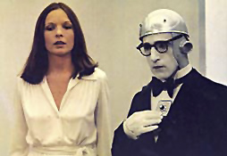

In Woody Allens Film "Der Schläfer", enzieht sich Miles Monroe (W. Allen) der Wirklichkeit, indem er glaubt ein Dienstboten-Roboter zu sein. Nach einer katastrophalen Dinner-Party, bei der Miles Probleme mit futuristischer Haushalts-Technik hat, und gegen einen monströsen Schnellkoch-Pudding kämpft, wird er zu einem Mechaniker gebracht, um sein Denken u. seine Schaltungen zu überprüfen...